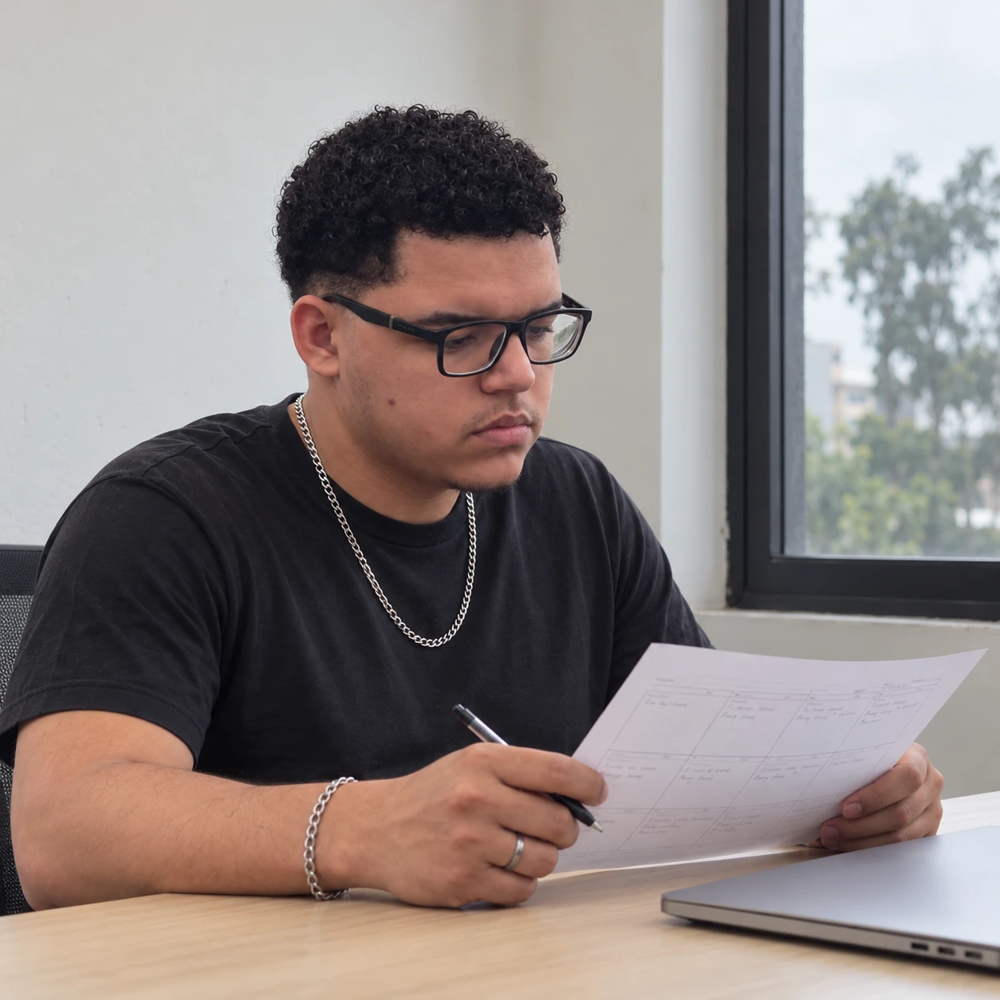

Estratégia
Direção clara para fazer conteúdo, campanha e marca apontarem para o mesmo lugar.

Estratégia, posicionamento e conteúdo para construir presença, fortalecer percepção e fazer sua marca ocupar o lugar certo.
PROJETOS SELECIONADOS ↓
Direção clara para fazer conteúdo, campanha e marca apontarem para o mesmo lugar.
Formatos e narrativas que deixam a marca reconhecível no dia a dia.
Identidade, discurso e presença para construir valor percebido.
Campanhas e decisões guiadas por objetivo, leitura e evolução.